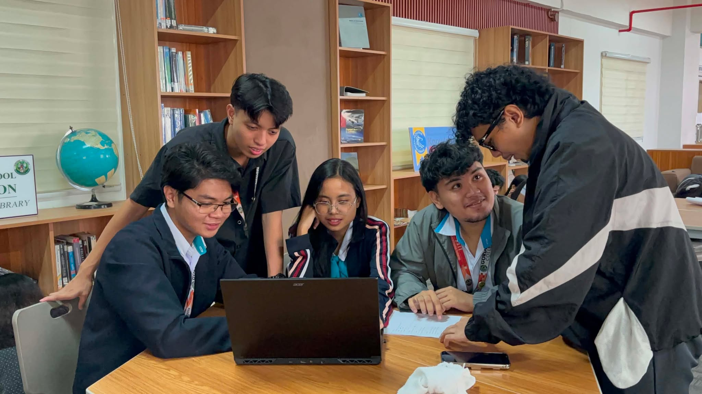

Teacher-Subject Mismatch
Many teachers in Olongapo are assigned subjects outside their specialization due to staffing shortages. Students feel the gap, and we built a way to help bridge it.
Our purpose is driven by the students who use it.
OlongNotes is a free, community-driven notes-sharing and Q&A platform for students in Olongapo City, built by four BSIT-2 students at Gordon College who wanted knowledge to outlive a school year, not disappear at the end of one.
Why We Built This
Many teachers in Olongapo are assigned subjects outside their specialization due to staffing shortages. Students feel the gap, and we built a way to help bridge it.
Students are promoted without mastering prior grade material, creating compounding gaps over time. OlongNotes gives every student access to notes from those who already passed the same subject.
A graduating student's reviewers and notes vanish the moment they leave. We built a place where that effort stays, searchable, shareable, and useful forever.
Knowledge shared today becomes success for tomorrow.
Elijah Josh V. Opriasa
Project Lead, OlongNotes
We set four things we wanted this platform to stand for. They define how we built it, and how the community around it should feel.
Every student should be able to learn from the ones who came before them, without paying for it.
Seniors already did the work of understanding a subject. That effort shouldn't disappear after finals.
A place to ask the question you're embarrassed to ask in class, without judgment.
Not a generic platform. Every school, subject, and grade level in Olongapo City, in one place.
Every note you upload becomes a resource for someone who needs it next. That's the whole idea.
Browse Notes
Upload and browse class notes, reviewers, and problem sets organized by school, grade level, and subject. What a senior understood becomes a head start for a junior.
Every school has its own quirks, its own teachers, its own gaps. OlongNotes lets students ask and answer questions specific to their own school, grade, and subject.
Four second-year BSIT students from Gordon College, Olongapo City, building for our community.

BSIT-2 student at Gordon College, Olongapo City.

BSIT-2 student at Gordon College, Olongapo City.
BSIT-2 student at Gordon College, Olongapo City.

BSIT-2 student at Gordon College, Olongapo City.

BSIT-2 student at Gordon College, Olongapo City.
Your notes today can be their guide tomorrow.